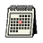

Send a private note. Your teacher will see it the next time they check the dashboard.

Your quarter grade is the higher of two tracks:
① Your work — worksheets 30%, quizzes 30%, the unit poster 30%, Blookets 10%. Your unit poster is scored 90 to 115, so it can only help you unless the rest of your Work is above 90. A lesson's flashcard deck earns its Blooket credit.
② Progress Checks — one per unit, AP-exam-style, retakable until the quarter closes. Your best score counts.
Your grade starts as your Work track. Once Work (with bonus) is at least 40%, your Progress Check score replaces it if it's higher. A low Progress Check never lowers you — either track can reach 100%.
Missing work becomes a 0 13 days after its class day (worksheets and Blookets). The Desk warns you 3 days before. Nothing locks — finish it later and the 0 goes away. A 0 counts in the quarter its 0 date lands in. Quarter 1 ended Fri Nov 6: work whose 0 date was by Nov 6 counts for Quarter 1, and you can fix those 0s until it closes Tue Nov 10. Work with a 0 date after Nov 6 counts for Quarter 2 (Nov 9 – Jan 22) even if it was taught in Quarter 1; finishing it by Tue Nov 10 can also raise Quarter 1, never lower it. Progress Check retakes for Quarter 1 end at the close too.
Worksheets stay open: change an answer and Check again. Grade with AI only ever raises your score. Quizzes: miss a question and you get one retry with a short explanation — a correct retry earns half credit. Still wrong? Talk it through can earn back half credit.
Bonus only goes up. An exit ticket adds +5 / +3 / +1 (E/P/I) to its lesson. DOK bonus sheets add +7.5 / +4.5 / +1.5, banked and added at the end of the quarter to whichever track helps you more. A worksheet finished by its class day adds +1 (up to +5 a quarter). Quarters still top out at 100%.
One official grade. Every night your grade is written to Schoology, and the Desk shows that same number marked official. Today's estimate moves as you work, so it's a step ahead of Schoology until tonight's sync. It uses a slightly stricter formula (it also asks for 40% on the Progress Check side, and otherwise is capped at 70% of the better track), so it can differ from the official number until the nightly write. A score Mr. Colson types into Schoology by hand is never lowered by the sync.
Practice never counts: the Review deck, the TI-84 Trainer and Study Break. Candy, keys and games never change your grade.
School bulletin